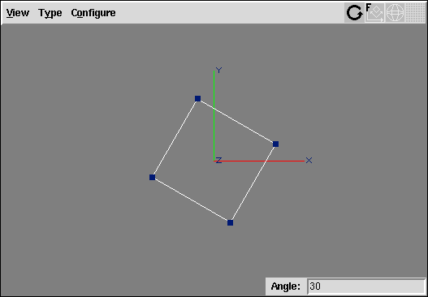
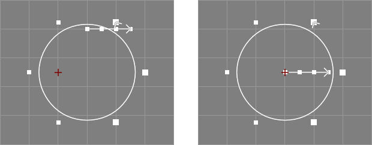
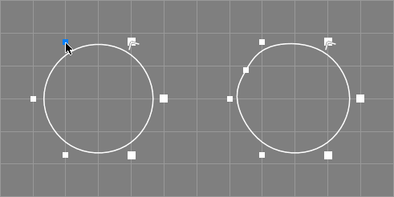
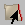

Next
Previous
Contents
This section contains the documentation of the interactive modelling
actions available in Ayam.
Before invoking any modelling action one or more objects should be
selected using the object hierarchy in the main window, the pick action,
or selection manipulating keyboard shortcuts.
Every action can be started with a key press (a shortcut) when
the keyboard focus is in a view window or by clicking on the associated
button in the toolbox window.
Using a keyboard shortcut starts that action in the current view only,
the other views are not affected. In multi window GUI mode, starting an
action from the toolbox window will cause the action to be started in all
view windows that are currently open simultaneously. In single window GUI
mode, the action will be started in the current internal view only
(unless "AutoFocus" is enabled).
It is perfectly ok to start and work with many different actions at
the same time in different views: one can have e.g. a view, where objects
are moved, a second where objects are rotated and a third, where objects
are picked. The layout, drawing style, and grids may also differ between
the different views. Together with the feature, that the selection may be
changed while actions are active and even panning and zooming of views
is possible (using the rightmost and middle mouse buttons respectively) while
actions are active and without breaking them, this is the key to
unsurpassed flexibility in modelling using Ayam.
To break an action, the <Esc> key may be used.
The default action for all views, which is also in effect after
use of the <Esc> key, is "None", "Pick", or
"Edit" (depending on the preference
setting "Modelling/DefaultAction").
See section
Selecting Objects by Picking
for more information about picking objects.
Note that modelling actions that are directly modifying transformations
or points are not available in perspective views, but selection actions
and also the numeric point editing action do work fine.
If an action is in effect for a view, the views title will be changed
appropriately.
A modelling action is performed by clicking into the view with the
leftmost mouse button to mark a point in space or to pick a vertex
and then by dragging the mouse.
You may undo/redo the effects of a modelling action using <Ctrl+z>
and <Ctrl+y> (see section
The Undo System for more information).
Grids are available to restrict the modelling actions to certain
points and help in exact modelling.
Also note that the middle and rightmost mouse buttons may be used
to zoom and move the view while modelling actions are active.
For actions that modify the camera of a view please see section
View Window Shortcuts and Actions.
This section gives an overview over the various modelling actions.
Note that a more complete collection of shortcuts is available as separate
reference card document in the Ayam distribution.
|
Name | Shortcut | Icon | Name | Shortcut | Icon |
|
Transform: | | | | | |
|
Move | <m> |
| Rotate | <r> |
|
|
Move X | <mx> |
| Rotate About | <ra> |
|
|
Move Y | <my> |
| Set Mark | <a> |
|
|
Move Z | <mz> |
| | | |
|
Scale 3D | <S> |
| Scale 3D About | <Sa> |
|
|
Scale 2D | <s> |
| Scale 2D About | <sa> |
|
|
Scale 1D X | <sx> |
| Scale 1D X About | <sxa> |
|
|
Scale 1D Y | <sy> |
| Scale 1D Y About | <sya> |
|
|
Scale 1D Z | <sz> |
| Scale 1D Z About | <sza> |
|
|
Stretch 2D | <T> |
| Stretch 2D About | <Ta> |
|
|
Edit: | | | | | |
|
Edit | <e> |
| Tag Points | <t> |
|
|
Edit Weights | <w> |
| Insert Points | <i> |
|
|
Edit Numeric | <E> |

| Delete Points | <d> |
|
Modelling Actions Overview
Many modelling actions either work on objects transformation attributes
or coordinates of selected points. Since Ayam 1.30 this is
controlled implicitly by the point selection: if editable points are selected,
they will be transformed instead of the object.
If there are objects with and without selected editable points in the
selection, the latter will not be transformed at all.
Using the preference setting "ScopeManagement" (see section
Modelling Preferences) a
explicit scope management mode can be enabled.
For this mode there are two keyboard
shortcuts: <o> and <p>.
<o> switches to object transformations and <p> to
point transformations.
These shortcuts can be used anytime, even in the middle of any other
actions. If points are to be modified, a little red point will appear
in the modelling mode icon in the view menu as shown in the image
below:
View Transforming Objects (left) and Points (right)
Note that those shortcuts just switch the current view, to modify all
open views, just press o or p twice:
<oo> and <pp>.[∗]
Also note that the modelling scope may also be toggled by clicking
on the modelling mode icon with the rightmost mouse
button or by starting the action using this mouse
button.[∗]
This section describes techniques that can used for selecting
one or more objects within a view window with the mouse.
When the view windows action is "Pick", objects
that appear within this view can be selected with the mouse.
This action may be invoked by pressing <P>
or by making this action the default action using the preference
setting "Modelling/DefaultAction". If picking is the
default action, it will be automatically enabled when any other
action is broken using <Esc>.
Selecting Individual Objects
Selecting objects within a view is a straightforward operation that uses
standard methods. You will use the following two selection operations most
frequently:
- To select a single object within a view, move the cursor to the object
and click mouse button 1 (the leftmost one).
Once you select an object, any objects previously
selected are unselected automatically.
- To select an additional object, move the cursor to the object and
<Control>+Click (again with the leftmost mouse button).
Previously selected objects remain selected, and
the newly picked object is added to the selection. Notice that the picked item
must belong to the same level as the previously selected objects. An
alternative method for selecting multiple objects is to drag a rectangle
around them. For more information see
Drag-selecting Multiple Objects
Note that the Root object and View objects can not be pick-selected at all.
Drag-selecting Multiple Objects
You can select multiple objects using the <Control>+Click method
described in section
Selecting Individual Objects.
An additional method for selecting multiple objects is to drag a rectangle
around those objects. However only objects that belong to the current level
can be picked within a drag-selection. If you want to select multiple objects
that belong to another level you must change the current level by either
selecting it in the tree/listbox or by picking one object from that level
on a view.
The procedure for drag-selecting multiple objects also uses a standard method:
- Imagine a rectangle that encloses only the objects you want to select.
- Click at one corner of the rectangle and, while continuing to press the
mouse button, drag until you have enclosed all the objects.
- Release the mouse button. All the valid objects inside or crossing the
rectangle are selected and any objects previously selected are unselected
automatically.
Note that if you press <Control> during the drag-selection, objects
that are enclosed by the rectangle will be added to the current selection
instead of replacing it.
Ambiguous Picking
In some cases Ayam is unable to differentiate between the objects you have
selected and other nearby or related objects. This ambiguity can arise as
follows:
- Imagine a small square surrounding the cursor. When you click an object,
any other valid objects that fall inside this square are also considered to
be possible selections. For example, if you select an item that is positioned
very close to another one, Ayam may consider both items to be possible
selections.
- If your model is three-dimensional (which is likely to happen),
imagine a line that is perpendicular to the screen and that passes through
the cursor and into the model. When you pick an object, any objects that
intersect this line are considered to be possible candidates for selection.
If the selection is ambiguous Ayam displays a window that contains a list of
the possible candidates for selection (see image below), or, if the
"PickCycle" option is activated, Ayam just cycles through the
candidate objects by further clicks on the same
position.[∗]
When a name in the candidate list is selected,
the corresponding object is highlighted. Click "Ok" when you have
determined which object to select or "Cancel" to close the list and keep
the previous selection unchanged.
 List of Picking Candidates
List of Picking Candidates
It is also possible to use a double click in the list of selection
candidates to select an object and immediately close the dialog
window. Moreover, as the list of candidates immediately gets the
keyboard focus, the cursor keys and <Enter> can also be
used to select the object.[∗]
Notes:
- While the list of ambiguous candidates is opened no other
objects can be picked within the views.
- It is possible to use the
"Zoom to Object" action (shortcut
<BackSpace>) while the ambiguous select listbox is open to get
a better view of the temporarily selected object.
- The tolerance used to determine whether an object should be picked
or not can be adjusted (see
"PickTolerance" in
Hidden Preference Settings).
The modelling action "Select Points" (shortcut: <t>;
for t ag points) may be applied to objects that support
single point editing or read only points.
To select or de-select a point it can directly be clicked upon
or a rectangular region can be dragged with the mouse around the
points in question.
Only points within a certain distance from the mouse pointer
click position will be considered picked (see preference option
"Modelling/PickEpsilon").
Points that would be picked will flash in a different color when
the mouse pointer moves over them (this is also controlled by the
preference option "Modelling/FlashPoints").
Selected points will be drawn in dark red when the select points
modelling action or a modelling action that would modify the selected
points is active (see the following image).
Object With Selected Points (red)
The selected editable points may be modified subsequently using the
modelling actions Move, Rotate, and Scale; refer also to the discussion in
section
Transforming Objects or Selected Points.
See also the table below.
|
Name | Shortcut | Icon |
|
Tag Points | <t> |
|
Tag Action
After the pick (the selection of a point), the picked point
will be added to the list of selected points for the selected object.
If the selected point is already in that list it will be removed from
the list instead, the picked point will be deselected.
All points can be selected easily using the keyboard shortcut <A>.
The list of selected points will not be deleted from the object until
an explicit deselection is performed using the keyboard shortcut
<N> or if certain modelling tools are used.
The point selection can also be inverted using the keyboard shortcut
<I>.
All three shortcuts above can be used anytime without interfering
with any other active modelling actions.
Note that the list of selected points is not copied, if the object
is copied using the clipboard. The selection is also not saved to
Ayam scene files. But selected points survive
undo/redo.[∗]
Furthermore, the selection action itself is not an operation
recorded in the undo buffer, thus cannot directly be undone.
The point selection also does not interfere with single point modelling
actions:
It is perfectly legal to select some points, move them using
the move action, then switch to single point editing, edit
some other or even one of the selected points, switch back
to the selection action, add other points to the selection or delete
some points from the selection, switch to rotate, rotate the selected
points and so on.
A bigger number of points may be added to the selection using a
click and drag operation. All points that are inside the rectangular
region defined by the click and drag will be added to the selection.
In fact, this approach is the only way to safely add points to the
selection that occlude each other. Clicking always only adds/removes
single points.
Holding down the <Ctrl>-key while
dragging the mouse removes all selected points within the rectangular
region defined by the drag from the
selection.[∗]
The exact behaviour of picking multiple points of a NURBS curve or surface
depends on the attribute "CreateMP":
If "CreateMP" is enabled, picking a multiple point will always
select all points that make up the multiple point.
If "CreateMP" is disabled, picking a multiple point will only
select the first of the points that make up the multiple point
(but drag selection can be used to select all points nevertheless).
Front View With Mark Set At 1,-1,0
This action may be invoked to mark a point in space for perusal
of other modelling actions that e.g. rotate or scale about a point.
The marked point will be shown as a little red cross in the view window
(see also the image above).
The keyboard shortcut to invoke the set mark action is <a>.
This action is also active as intermediate action for e.g. rotate
about, where the keyboard shortcuts <r>
and then <a> would be used in a sequence and after
setting the mark, the rotate about action would take over again.
See also the table below.
|
Name | Shortcut | Icon |
|
Set Mark | <a> |
|
Set Mark Action
A single click with the left mouse button sets the mark. If grids are
active in the view, the mark will be snapped to the nearest grid coordinates.
Note, that, using a single mouse click, only two dimensional mark
coordinates can be specified. Therefore, in versions prior to 1.21, the
third coordinate was always set to zero upon a click. This is no longer
the case. If the preference option "Modelling/GlobalMark" is
enabled, the third coordinate is not reset anymore. This way all
three coordinates of the mark can be defined by clicking two times in
appropriate views, e.g. first in a
front view for the x and y coordinates and then in a side view for the
missing z coordinate.
The mark can also be set to a point of one of the selected objects by
clicking on it. In this case, the mark coordinates are always immediately
three dimensional.[∗]
If the mouse is dragged instead of clicked, the mark is set to the
bounding box center of all points in the drag
rectangle.[∗]
Additionally, when the set mark action is active, the following keyboard
shortcuts are available:
<Return> accept the current mark (useful, if one
first rotates about a point then decides to also scale about
the same point: <ra>, drag mouse, <sa>,
<Return>, drag mouse ...),<c> set the mark to the center of gravity of all
currently selected objects coordinate systems,<C> set the mark to the center of gravity of all
currently selected points.<b> set the mark to the center of the bounding
box of all currently selected points.<0> – <9> open a intermediate
parameter GUI where the three mark coordinate values (separated by spaces) may
be entered.[∗]
The image below demonstrates the difference between the
center of the bounding box and the center of gravity.
Bounding Box Center Mark (left) and Center of Gravity Mark (right)
The mark may also directly be manipulated using the corresponding view object
property (see also section
ViewAttrib Property).
Since Ayam 1.21, the mark may also be set without activating the
set mark action and without interfering with other modelling actions
by double clicking with the rightmost mouse button.
Another way of setting the mark is via the "FindU" special action
for curves
(see also section
Finding Points on Curves)
or the "FindUV" special action for surfaces
(see also section
Finding Points on Surfaces)
.
The mark can also be used to remember an important point in space
and get back to it later using the pan to mark action
(keyboard shortcut <.>).
The current mark can be cleared by pressing <D> anytime.
Finally, remember that certain operations like e.g. changing the view
type will also clear the mark.

Intermediate Parameter GUI Example
Several interactive modelling actions support intermediate parameter
GUIs.[∗]
Those are simple entry fields that appear in the lower right corner of the
view window when e.g. a
number key is pressed while the action is active and allow to parameterise
the action in quick and exact fashion. See also the image above, where
the intermediate parameter GUI for the Rotate action is shown.
The parameter value can be committed using the <Enter> or
<Return> key.
The parameter GUI can also be used multiple times / kept open
when the <Shift> key is held down while committing the
parameter value.
Currently only actions that require one parameter are supported.
Using the modelling action "Move" (shortcut: <m>)
selected objects or selected (tagged) points can be moved.
Note that the objects/points will be moved in the XY-plane for
Front-views, the ZY-plane for Side-views, and the XZ-plane
for Top-views only, no matter how the view is rotated.
The move action may be restricted to a certain
axis, by pressing <x>, <y>, or <z>
right after the <m>.[∗]
For an overview of the move actions see also the table below.
|
Name | Shortcut | Icon |
|
Move | <m> |
|
|
Move X | <mx> |
|
|
Move Y | <my> |
|
|
Move Z | <mz> |
|
Move Actions Overview
See also the documentation of the corresponding
scripting interface commands
movOb and
movPnts.
Using the modelling action "Rotate" (shortcut: <r>)
objects or selected (tagged) points can be rotated.
The axis of rotation is always parallel to the Z-axis in Front-views, the
Y-axis in Top-views, and the X-axis in Side-views of the local
object coordinate system. The orientation of the object coordinate system
may change in respect to the world coordinate system if a sequence of
rotate modelling actions is applied.
Note that if multiple objects are selected, each object is rotated
around the center of its own local coordinate system.
Only the Rotate_X, Rotate_Y, or Rotate_Z property of the selected
objects will be changed by this action.
|
Name | Shortcut | Icon |
|
Rotate | <r> |
|
Rotate Action
See also the documentation of the corresponding
scripting interface commands
rotOb and
rotPnts.
Using the rotate about modelling action
objects or the selected (tagged) points of the selected objects
can be interactively rotated about a specific point in space.
To start the rotate about action, invoke the normal rotate action,
then press <a>.
See also the table below.
|
Name | Shortcut | Icon |
|
Rotate About | <ra> |
|
Rotate About Action
To rotate about a different point, the intermediate set mark action must
be restarted (simply press <a> again).
After setting the mark, the action works the same way as
the Rotate action, except that it rotates the selected object(s)
or points about the mark.
This, consequently, also works with multiple selected objects.
Note that this action does not only change the Rotate_X,
Rotate_Y, or Rotate_Z
properties of the selected objects, but also the Translate_X,
Translate_Y, or Translate_Z properties.
To avoid degenerated coordinates due to roundoff errors it is highly
suggested to use a grid or the intermediate parameter GUI
with this action.
See also the section
Automatic About Center Actions
for a script, that modifies the rotate action to rotate
about the current selections center automatically.
There are several different actions available to interactively scale
objects or the selected (tagged) points of the selected objects:
The modelling action "Scale 3D" (shortcut: <S>, note the
big S!) scales all three axes of the selected objects or
the selected (tagged) points of the selected objects
by the same factor.
The modelling action "Scale 2D" (shortcut: <s>)
scales just two axes of the selected objects or
the selected (tagged) points of the selected objects. Those axes are
XY in a Front-view, ZY in a Side-view, and XZ in a Top-view.
It is also possible to restrict the scaling of objects or selected
points to just one axis.
For that <x>, <y>, or <z> must
be pressed right after <s> (e.g. <sx> for
scale 1D about x).
Since Ayam 1.17, direct access to the 1D scale modelling actions
"Scale X" (old shortcut: <x>),
"Scale Y" (old shortcut: <y>), and
"Scale Z" (old shortcut: <z>) is no longer available.
The modelling action "Stretch 2D" (shortcut: <T>)
works much like "Scale 2D" but the scale factor for each
axis may be different. Never start this action by a click
near one of the axes to be changed, as this will cause
very big scale factors for the other axis. Try it first with
a centered box by starting from one of the box corners,
then try it once starting on the X-axis.
For an overview of the scale actions see also the table below.
|
Name | Shortcut | Icon |
|
Scale 3D | <S> |
|
|
Scale 2D | <s> |
|
|
Scale 1D X | <sx> |
|
|
Scale 1D Y | <sy> |
|
|
Scale 1D Z | <sz> |
|
|
Stretch 2D | <T> |
|
Scaling Actions Overview
See also the documentation of the corresponding
scripting interface commands
scalOb and
scalPnts.
Using the scale about modelling actions objects or the selected
(tagged) points of the selected objects can be interactively scaled
about a specific point in space.
To start a scale about action, invoke the normal scale action,
then press <a> (e.g. <sa> for scale 2D about,
<sya> for scale 1D Y about).
For an overview of the scale about actions see also the table below.
|
Name | Shortcut | Icon |
|
Scale 3D About | <Sa> |
|
|
Scale 2D About | <sa> |
|
|
Scale 1D X About | <sxa> |
|
|
Scale 1D Y About | <sya> |
|
|
Scale 1D Z About | <sza> |
|
|
Stretch 2D About | <Ta> |
|
Scaling About Actions Overview
To scale about a different point, the intermediate set mark action
must be restarted (simply press <a> again).
After setting the mark, the action works the same way as
the scale action, except that it scales the selected object(s)
or points about the mark.
This, consequently, also works with multiple selected objects.
Note that this action does not only change the Scale_X, Scale_Y,
or Scale_Z
properties of the selected objects, but also the Translate_X,
Translate_Y, or Translate_Z
properties.
Also note, that the three dimensional scaling about the mark
occurs in all three dimensions, however, in the intermediate interactive
set mark action only two dimensional coordinates can be specified
using a single mouse click. To specify a true three dimensional mark
the corresponding view object attributes can be used or
a point can be selected and the mark set to it (shortcut <C>).
See section
Setting the Mark for other means
of setting a three dimensional mark.
To avoid degenerated coordinates due to roundoff errors it is highly
suggested to use a grid or the intermediate parameter GUI
with this action.
See also the section
Automatic About Center Actions
for a script, that modifies the scale actions to scale
about the current selections center automatically.
To edit the points of an object two actions ("Edit" and
"Numeric Point Edit") are available.
Those actions may be applied to objects that support single point
editing only.
Such objects usually draw their selectable points using small white
rectangular handles when a modelling action is active (see also the
image below).
Objects With Editable (left) and With Read-only Points (right)
In contrast to e.g. the move action, all point edit actions require the
handle of the point to be picked directly.
Only points within a certain distance from the mouse pointer click
position will be considered picked (see preference option
"Modelling/PickEpsilon").
Points that would be picked will flash in a different color when
the mouse pointer moves over them (this is also controlled by the
preference option "Modelling/FlashPoints").
For an overview of the point edit actions see also the table below.
|
Name | Shortcut | Icon |
|
Edit | <e> |
|
|
Numeric Edit | <E> |
|
Edit Points Overview
The modelling action "Edit" (shortcut: <e>)
works much like the move action, but it moves single points instead of
objects. Since Ayam 1.18 it is possible
to edit points of multiple selected objects (in former versions
only points from the first selected object were considered).
If a multiple point is edited, this action modifies all single
points that make up the multiple point, i.e. it is not possible to
move single points apart from a multiple point using this action.
Temporarily disable the "CreateMP" property or
explode the multiple point to do that.
If the preference option "Modelling/EditSnaps" is enabled,
the picked point will be moved to the nearest grid coordinates first,
otherwise the grid just controls the displacement for the edit
action. The snapping can occur in 2D or 3D, depending on the preference
option "Modelling/Snap3D".
Moreover, while snapping a point, the mouse pointer will warp to
the new position of the point (so that the user does not lose
track of it). Warping the mouse pointer currently does not work on
Mac OS X Aqua.
The modelling action "Numeric Point Edit" (shortcut:
<E>)
starts an intermediate point selection action and upon a click
with the mouse opens a small window where the coordinates of the
selected editable point(s) may be changed directly by entering
new coordinate values on the keyboard (see image below).
If there are already selected points, the dialog window will
be opened immediately.[∗]
Numeric Point Edit Dialog
Nothing will be changed unless the "Return" key is pressed
in a coordinate entry field or the "Apply" button is used.
In contrast to the normal point selection action, where further
clicks add points to the selection, clicking on new points, while
the edit point dialog is open, deselects the old point(s),
selects the new point and loads its coordinate values into the
entry fields. In case of multiple selected objects, the deselection
is only performed on the object with a new selection.
Note that the w coordinate setting will be ignored for selected points
that do not have weight information (are not rational).
Using the small menu on top of the coordinate window one can
determine whether editing takes place in local/object space or
global/world space.
This modelling action may affect multiple points of multiple selected
objects.[∗]
Snapping points of different objects together is now possible too:
Just select two objects, start numeric point editing (press <E>),
pick a point on the first object (where a point of the second object
should be snapped to), the point edit window opens, now drag select
the point of the second object (do not use a single click for
selection as this would also load new coordinates) and press apply.
The numeric point editing action also supports read only
points, their coordinates may be retrieved, but applying any values
will have no effect.[∗]
When applying changes, single coordinate entry fields may be empty to
prevent a change of the corresponding coordinate
value.[∗]
If a multiple point is edited, this action modifies all single
points that make up the multiple point, i.e. single points can not
be moved apart from a multiple point using the numeric point
edit action. Temporarily disable the "CreateMP" property or
explode the multiple point to do that.
Notice that the numeric point editing dialog may stay
open all the time.[∗]
Furthermore, it is not necessary that the original
object stays selected while working with the numeric point edit dialog,
other objects may be selected to e.g. infer new point coordinates from
their properties and apply them to the original object.
Furthermore notice that the coordinate values displayed in the numeric
point editing window will not update when the point is modified by
another modelling action (e.g. in another view). Simply click on the point
again in a view where the numeric point editing action is active, to
update the coordinate values in the numeric point editing dialog.
The numeric point edit value fields support Tcl expressions.
This allows e.g. to set a point to
exactly[∗] 1/3 by entering:
[expr 1.0/3.0]
Even though the dialog may display point coordinates in degraded
accuracy (due to floating point to string conversion)
the original point data is unchanged and its accuracy is not affected
as long as the new data is not applied.
See also the discussion of the "TclPrecision" preference option in
section
Miscellaneous Preferences).
The numeric point edit dialog also has a context menu.[∗]
The entries in this menu allow to:
-
"Clear" all entries,
-
"Reset" all entries to the last fetched values (undo edits),
-
"Fetch Mark", set all entries to the mark coordinates of the
current view (W is cleared),
-
"Fetch First", set all entries to the first of the currently
selected points, or
-
"Fetch Last", set all entries to the last of the currently
selected points.
The following keyboard shortcuts are in effect for the
numeric edit dialog:
-
<x>, <y>, <z>, <w>, move
the focus to the respective entry.
-
<Return> / <Enter>, apply
all changes.
-
<Shift-Return> / <Shift-Enter>,
apply all changes and close the dialog.
-
<Shift-Delete>, clear all entries.
-
<Esc> close the dialog.
In the NURBS context, weights are mainly used to construct perfect
circles, circular arcs, and spheres. However, they also present
another way of influencing the curves or surfaces shape in relation
to the control point with the weight: Weights smaller than 1.0 repel
the curve or surface from the control point, whereas weights larger
than 1.0 attract the curve or surface to the control point. See
also the following image:
Weights Example (Blue: w = 0.5, Red: w = 2.0)
To edit the weights of an object two actions ("Edit Weights" and
"Reset Weights") are available.
Those actions may be applied to objects that support single point
editing and support rational coordinates only. Those are
objects of type NCurve, NPatch, and PatchMesh.
The modelling action "Edit Weights" (shortcut: <w>)
allows to change the w coordinate of a single point by dragging the
mouse left or right. The initial click always resets the weight to 1.0.
For every 10 pixels the mouse is dragged, a value of 0.1 will be
added to or removed from the weight respectively.
If a grid is active, the 0.1 will be multiplied by the grid value
so that a grid of 0.5 will add/remove weight in terms of 0.05
increments/decrements.
When the <Control> key is held down while picking the
control point to edit, the weight will not be
reset.[∗]
The modelling action "Reset Weights" (shortcut: <W>)
resets the w coordinate of the picked point to 1.0. Drag
selection of points to reset is also
possible.[∗]
In both actions the current weight of a control point is visualized
by color: repelling weights (w < 1.0) are drawn in
tones of blue that
get darker as the weight approaches 0.0 and attracting weights
(w > 1.0) are
drawn in tones of red that get darker as the weight approaches 3.0.
Control points with zero or invalid weights are drawn in black.
Control points with negative weights are drawn in green.
Control points with no weight (w = 1.0) stay white,
see also the figure below.
Weight Scale
The weights may also be reset for all points using the
keyboard shortcut: <Ctrl-W>.
Also note that, if the preference option "RationalPoints"
is set to homogeneous, changing the weight of a control point
also changes its (displayed) position.
See also section
Modelling Preferences.
For an overview of the weight edit actions see also the table below.
|
Name | Shortcut | Icon |
|
Edit Weights | <w> |
|
|
Reset Weights | <W> |
|
Edit Weights Overview
Snapping Points to the Grid
There are two actions available for snapping points to the current
grid of a view.[∗]
The actions are initiated using the shortcuts <g>
and <G>. If an object has selected (tagged)
editable points, only those points will be snapped to the grid,
otherwise all editable points of the object will be snapped to the grid
(see also the image above).
If <g> is used, the snapping only occurs in
the modelling plane associated with the view (i.e. in 2D).
To snap all three coordinate values to the grid use <G>.
Note that the snapping also occurs, if the view has the preference
option "Use Grid" turned off.
This action can be used without affecting other active actions.
Snapping Objects to the Grid
There are two actions available for snapping objects to the current
grid of a view.[∗]
The actions are initiated using the shortcuts <f>
and <F>.
If <f> is used, the snapping only occurs in
the modelling plane associated with the view (i.e. in 2D).
To snap all three coordinate values to the grid use <F>.
Note that the snapping also occurs, if the view has the preference
option "Use Grid" turned off.
This action can be used without affecting other active actions.
Snapping Points to the Mark
The snap points to mark action moves all selected points to
the current mark.[∗]
See also the image above.
This action is initiated using the shortcut <M>.
All selected editable points of the selected objects are snapped to
the current mark coordinates (see section
Setting the Mark
for more information about the mark) immediately.
This action can be used without affecting other active actions.

Snapping Objects to the Mark
The snap objects to mark action moves all selected objects to
the current mark.[∗]
See also the image above.
This action is initiated using the shortcut <K>.
All selected objects are snapped to the current
mark coordinates (see section
Setting the Mark
for more information about the mark) immediately, providing
an easy way to move objects over long distances or to just put
an object "here".
This action can be used without affecting other active actions.

Inserting Points
The modelling action "Insert Point" (shortcut: <i>)
may be applied to NURBS, interpolating, and approximating curves
(objects of type NCurve, ICurve, and ACurve) only.
A new control point will be inserted in the curve right
after the picked point. The new point will be inserted in the
middle between the selected point and the next point, changing
the shape of the curve. See also the image above.
It is also possible to insert control
points into certain types of NURBS curves without changing
their shape using knot insertion; see also the insert knot tool section
Insert Knot Tool.
If the <Ctrl>-key is held down while clicking on a point,
the new point can interactively be placed on a freely chosen
position.[∗]
This is done by initially giving the new point the coordinates of the
clicked point, from there, the new point can be dragged to the
final position.
The modelling action "Delete Point" (shortcut: <d>)
may be applied to NURBS, interpolating, and approximating curves
(objects of type NCurve, ICurve, and ACurve) only.
The selected control point will be deleted from the curve.
Deleting points from a curve with knot type "Custom"
may currently lead to an incorrect knot sequence, please
check and correct the new sequence manually.
See also the table below.
|
Name | Shortcut | Icon |
|
Insert Points | <i> |
|
|
Delete Points | <d> |
|
Insert/Delete Points Actions
Successively Increasing the Multiplicity of Selected Points
To manipulate the multiplicity of selected NURBS curve control
points there are two modelling actions
available.[∗]
The actions are initiated using the shortcuts <*>
(to increase the multiplicity) and </>
(to decrease the multiplicity).
Increasing the multiplicity of a control point can be used to
easily construct sharp corners and linear curve segments
(see also the image above).
The multiplicity of the selected control points will only be
raised to the order of the curve and, conversely, never be
decreased below 1. Trying to increase/decrease beyond those
limits will not result in any error.
The selected points stay selected, so that the actions can be
applied multiple times.
Both actions can be invoked anytime without breaking other
actions.
Breakpoint Display in Find Point on Curve Action
The modelling action "FindU" (shortcut: <u>)
may be applied to NURBS curves (objects of type NCurve or
objects that provide NCurve objects) only.
This action may be used to get the corresponding parametric
value u from an arbitrary point on a curve. For every picked point
the appropriate value for u is calculated, stored
in the global variable "u", and additionally written to the console.
The mark is set to the coordinates of the point on the curve that
results from evaluating the curve at the parametric value u.
See also section
Setting the Mark
for more information about the mark.
Remember to exactly pick a point on the curve or nearby, otherwise
the calculation may fail.
This action can also be used to get the curve coordinates
from a distinct value (breakpoint) from the knot
vector.[∗]
Those points are displayed as rhombuses and can simply be picked, see also
the image above. If a breakpoint is picked, its parametric
value is put into the global variable u and the mark is set to
the corresponding, three dimensional, point on the curve. Drag
selection of breakpoints is also possible. A drag selection
of multiple breakpoints, either with one drag or a second drag with the
<Ctrl> key held down, leads to a knot range selection which will
be stored in a "UMM" tag.[∗]
The selected range will be displayed
as a pair of bracket symbols ("[" and "]") on the curve when the
"FindU" action is active.
A selected knot range can then e.g. be perused by the knot refine tool.
An empty drag selection will remove the current knot range selection by
removing the "UMM" tag.
See also the table below.
|
Name | Shortcut | Icon |
|
Find U | <u> |

|
Find Point on Curve Action
The modelling action "FindUV" (shortcut: <U>)
may be applied to NURBS surfaces (objects of type NPatch or
objects that provide NPatch objects) only.
This action may be used to get the corresponding parametric
values u and v from a point on a surface. For every picked
point the appropriate values for u and v are calculated,
stored in the global variables "u" and "v", and additionally
written to the console.
The mark is set to the coordinates of the point on the surface that
results from evaluating the surface at the parametric values u and v.
See section
Setting the Mark
for more information about the mark.
Remember to exactly pick a point on the surface or nearby, otherwise
the calculation may fail. As the icon suggests, this action works best
in the shaded drawing mode.
This action can also be used to get the surface coordinates
from a pair of distinct values (breakpoints) from the knot
vectors.[∗]
Those points are displayed as rhombuses and can simply be picked.
If a breakpoint is picked, its parametric
values are put into the global variables u and v and
the mark is set to
the corresponding, three dimensional, point on the surface. Drag
selection of breakpoints is also possible.
See also the table below.
|
Name | Shortcut | Icon |
|
Find UV | <U> |
|
Find Point on Surface Action
Display of Selected Boundary Curve (red) Example
The modelling actions "SelBnd" (shortcut: <n>)
and "SelBndC" (shortcut: <k>)
may be applied to NURBS surfaces (objects of type NPatch or
objects that provide NPatch objects) only.[∗]
These actions may be used to select a boundary curve for further
processing by e.g. the various tool object creation tools (see
section
Surface Creation Tools).
The selected boundaries will be drawn in red color when one of these
actions is active. See also the image above, where a trim boundary
of a Trim object has been selected.
The selection will be stored in SB tags and thus
survive scene saving and restoring. See also
section
SB (Selected Boundary) Tag.
Drag selection is supported by both actions. An empty drag selection
de-selects all currently selected boundaries.
Holding down the <Ctrl>-key while
dragging the mouse removes all selected boundaries within the rectangular
region defined by the drag from the selection.
See also the table below.
|
Name | Shortcut | Icon |
|
SelBnd | <n> |

|
|
SelBndC | <k> |
|
Select Boundary Curve Actions
Interactive Curve Splitting
The modelling action "Split Curve" (shortcut <|>)
may be applied to NURBS curves (objects of type NCurve) only.
Using this action a NURBS curve may be split into two new curves
at a point on the curve that is specified by picking a point
on the curve; see also the corresponding NURBS curve tool
Split Tool.
Remember to exactly pick a point on the curve or nearby otherwise
the calculation of the parametric value for the split will fail.
The selected curve will be changed by this action, and
a new curve will be created. It is currently not possible to undo
the changes of a split!
This action also displays the distinct values (breakpoints) from the knot
vector and allows to pick them just like the
"FindU" action.[∗]
Grids are not utilised by this action.
See also the table below.
|
Name | Shortcut | Icon |
|
Split | <|> |
|
Split Curve Action
Selecting Boundary Points
The modelling action "Select Boundary Points" (shortcut <B>)
may be applied to PolyMesh objects only.
This action can be used to select all control points of a PolyMesh
boundary after picking a point on that
boundary.[∗]
Selected boundaries are needed for the "Connect" polymesh tool,
see also
PolyMesh.
See also the image above.
Note that the PolyMesh object must be optimized for best results.
See also the table below.
|
Name | Shortcut | Icon |
|
Select Boundary | <B> |
|
Select Boundary Points Action
Normally, all editing takes place in world space and the input
plane of all modelling actions is constrained to the world
XY-, ZY-, or XZ-plane (depending on the type of the
view – "Front", "Side", or "Top" respectively).
However, if a view is aligned and switched to local,
editing in object space is possible. The input plane of an
aligned local view will match the XY-, ZY-, or XZ-plane of the
local object space, again depending on the type of the view.
Editing and other modelling actions take place in that plane.
This means that in an aligned local view a planar parameter curve of a
Skin object may be edited and the parameter curve is guaranteed to
remain planar all the time, even if both objects, curve and Skin,
are rotated and scaled arbitrarily via their transformation attributes.
Furthermore, grids will also act as if defined in local object space.
Note that in contrast to their normal behaviour, grids can also be scaled
differently in X-window and Y-window coordinates in aligned local views
(if the local object space is deformed this way).
To make a view object-local and aligned the object must be selected first.
Now, pressing <l> twice makes the current view object-local
(in external views <Ctrl+l> can also be used).
In Ayam versions prior to 1.18 the view also needed to be aligned
manually using <L> (or <Ctrl+a> in external
views). Since Ayam 1.18, the view is automatically aligned to the
selected object or current level when cycling through the
global/local modes.
Manually aligning a view may still be necessary after certain changes to
the camera of the view e.g. by the rotate view action.
Note that realigning is also always possible by cycling the modelling
mode three times using <l>.
But let us get back to our local view.
To illustrate local views a little bit further, see the following example
images:
Global Front View with Rotated Sweep
A Sweep object with a circular B-Spline curve as cross section (rotated
about the Y-axis by 90 degrees using the transformation attributes) and a
straight standard curve as trajectory.
The Sweep itself is rotated about the Z-axis by 30 degrees. The view is a
front view, the cross section and trajectory are both selected.
Note how inadequate the grid spacing would be to edit the trajectory curve
(it is e.g. near impossible to edit the curve and keep it straight).
» Press <l>.
Local (Level) Aligned View
The view has been switched to level-local using a single press of the
<l> key (see the modelling mode icon, it is displaying a
L in the lower right corner. The view is now aligned to
the 30 degree rotated space of the Sweep object (note the Root object
coordinate system, it is tilted). The grid is also rotated (with respect
to the root coordinate system) but now much more useful for editing the
trajectory, in fact it is perfectly aligned to the trajectory.
» Press <l> again.
Local (Object) Aligned View
Now the view is object-local and aligned to the first of the selected
objects (the cross section curve); look at the modelling mode icon,
it is now displaying a O in the lower right corner. As the selected
cross section curve was rotated by 90 degrees around the Y-axis, the
front view now displays a circle. Note again the orientation
of the Root object coordinate system. The cross section curve can now
be edited safely, it will stay planar.
Note, that object-local aligned views only align to the first of multiple
selected objects; if all selected objects share the same transformation
attributes, everything is fine, but if not, some objects will be misaligned.
Also remember: when a view is level-local, changing the current level
does not automatically realign the view. If the view is object-local,
changing the object selection will also possibly lead to a misaligned
view. To realign the view after changing the current level or object
selection simply press <L>. Note that aligning the view changes
the aim point of the view camera to the origin of the respective local
coordinate system which might not be appropriate for modelling purposes;
so, after a selection change, one may want to also zoom the view to the
newly selected object: <LO>.
Finally, note that aligning views only works for spaces
defined by the transformation attributes, it is not possible to
align to e.g. a planar curve that has the default transformation
attributes and is rotated via the control points.
Next
Previous
Contents